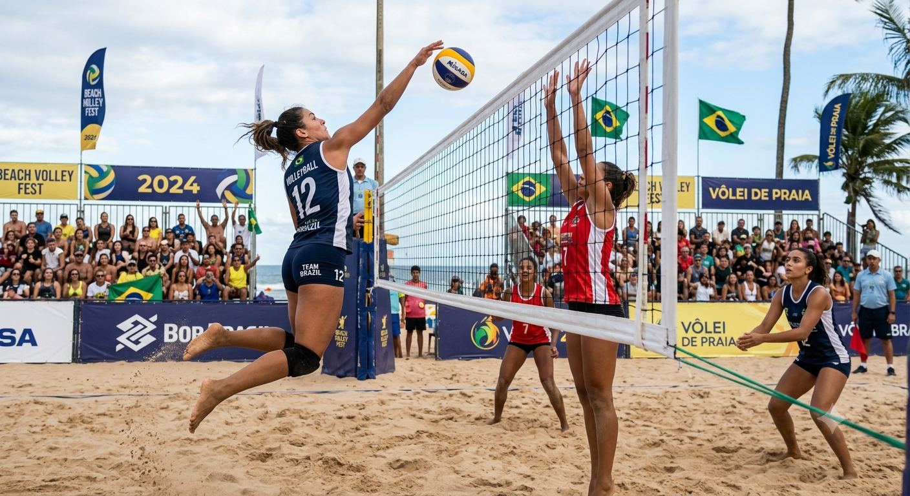

O vôlei foi criado em 1895 por William G. Morgan, nos Estados Unidos. Morgan era professor de educação física e queria um esporte menos violento que o basquete, que pudesse ser jogado em espaços fechados durante o inverno.
No Brasil, o esporte chegou em 1915, trazido pela Associação Cristã de Moços (ACM) em Recife. Hoje, o Brasil é uma das maiores potências do vôlei mundial, com títulos em todas as categorias.
O nome original era "Mintonette", mas o professor Alfred Halstead sugeriu mudar para "Volleyball" (bola voadora) por causa da forma como a bola se movia durante o jogo.
| Posição | Função |
|---|---|
| Levantador | Distribui a bola para os atacantes com precisão |
| Ponteiro | Ataca pelas pontas da rede e ajuda na defesa |
| Central | Bloqueia ataques adversários e faz ataques rápidos pelo meio |
| Oposto | Fica de frente para o levantador e é o principal atacante |
| Líbero | Especialista em defesa e recepção; não ataca nem saca |
A posição de líbero foi criada em 1998 para melhorar a defesa e tornar o jogo mais dinâmico. O líbero usa uma camisa de cor diferente e pode entrar e sair da quadra sem aviso prévio ao árbitro.
O saque mais rápido já registrado foi do cubano Leonel Marshall, que atingiu incríveis 132 km/h.
No vôlei feminino, a maior velocidade registrada foi de 118 km/h.
O maior público da história do vôlei aconteceu em 1983 em uma partida amistosa entre Brasil e União Soviética, no Estádio do Maracanãzinho, com mais de 95 mil espectadores.
O Brasil é uma das maiores potências do vôlei mundial. Conquistou:
O jogador mais alto da história do vôlei é o russo Dmitriy Muserskiy, com 2,18 metros de altura.
No feminino, a polonesa Malwina Smarzek tem 2,11 metros.
Desde 2017, o vôlei usa o VAR (Video Assistant Referee) para revisar lances duvidosos, como toques na rede, invasões e se a bola tocou o chão ou não.